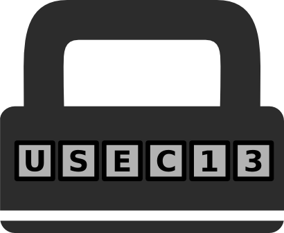

Many aspects of data security combine technical and human factors. If a highly secure system is unusable, users will move their data to less secure but more usable systems. Problems with usability are a major contributor to many high-profile security failures today.
However, usable security is not well-aligned with traditional usability for various reasons. Security is rarely the primary desired goal of the individual. In fact, security is often orthogonal and sometimes in opposition to the actual goal. Security information is about risk and threats: such communication is often unwelcome. Increasing unwelcome interaction is not a goal of usable design. Since individuals must trust their machines to implement their desired tasks, risk communication itself may undermine the value of the networked interaction. For the individual, discrete technical problems are all understood under the rubric of online security (e.g., privacy from third parties use of personally identifiable information, malware). A broader conception of both security and usability is therefore needed for usable security.
The Workshop on Usable Security invites submissions on all aspects of human factors and usability in the context of security and privacy. USEC '13 aims to bring together researchers already engaged in this interdisciplinary effort with other researchers in relevant areas, so we encourage economics, HCI, AI, theoretical computer science, cryptography, psychology and business studies etc. researchers and practitioners to submit original research in this area. We particularly encourage collaborative research from authors in multiple fields.
All accepted papers will be published in an LNCS volume together with the other workshops attached to the FC '13 conference. Submissions are limited to 15 pages including references for the main paper and a maximum of 18 pages (i.e., 3 pages of appendices). Authors are expected to submit anonymous versions of their papers for initial review, except where this would necessitate unduly undermining the paper (such as by omitting references to underlying work by the same author(s)). I anonymous submission is not feasible, please email the chair with your reasons. Referees will do their best to avoid identification of authors of anonymous papers during the review process.
Submission Deadline: 18th December (Extended from 16th November 2012)
Notification of Acceptance: 15th February 2013 (changed from 17th December 2012)
Final Paper Deadline: 12th April 2013 (changed from 12th January 2013)
Workshop: 1st April 2013
Submission will be via the EasyChair system: USEC 13 Submission Site
|
Andrew A. Adams, Centre for Business Information Ethics, Meiji University, Tokyo, Japan (Programme Chair) |
|
|
Kiyoshi Murata, Centre for Business Information Ethics, Meiji University, Tokyo, Japan |
Jean Camp, Indiana University
Jim Blythe, University of Southern California
Angela Sasse, UCL
Sadia Afroz, Drexel University
Rainer Böhme, University of Münster
Pam Briggs, Northumbria University
Lorrie Cranor, CMU
Neil Gandal, University of Tel Aviv
Seda Gürses, K.U. Leuven
Peter Gutmann, University of Auckland
Raquel Hill, Indiana University
Tiffany Hyun-Jin Kim, CMU
Markus Jakobsson, PayPal
Timothy Kelley, Indiana University
Brian LaMacchia, Microsoft Research
William Lehr, MIT
Hui Kai Lung, Hong Kong University of Science and Technology
Hitoshi Okada, National Institute of Informatics
Andrew Patrick, Office of the Privacy Commissioner of Canada
Frank Stajano, University of Cambridge
Hovav Schacham, University of California, San Diego
Bruce Schneier, BT
Dan Schutzer, BITS
Sean Smith, Dartmouth College
Douglas Stebila, Queensland University of Technology
David Wagner, University of California, Berkeley
Nicholas Weaver, University of California, Berkeley
Tara Whalen, Carleton University